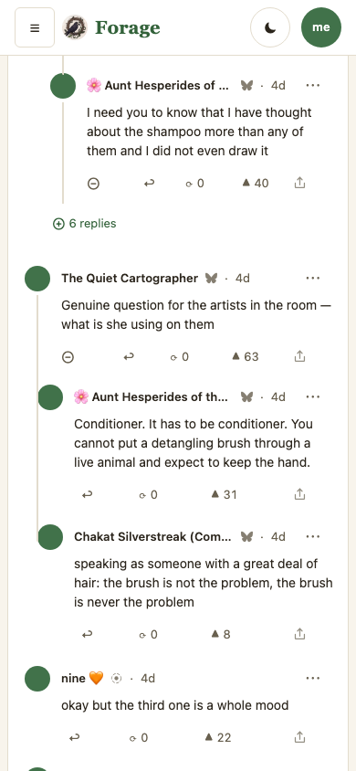
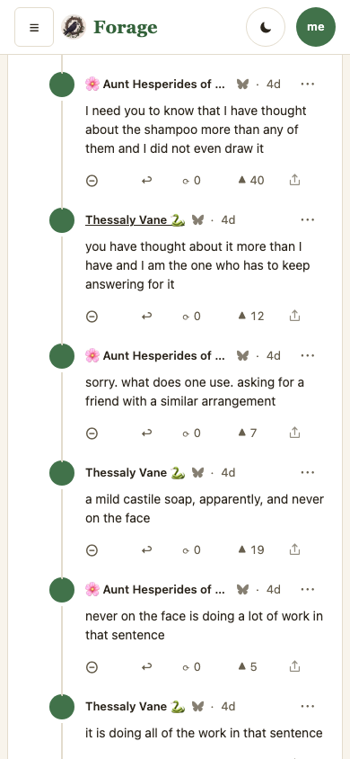
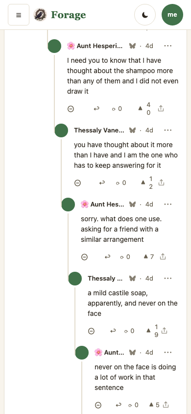
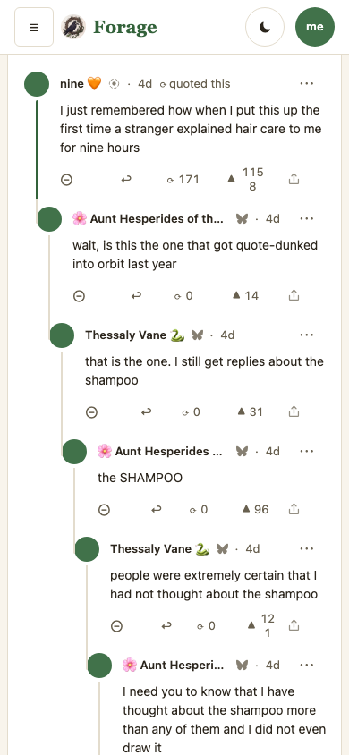
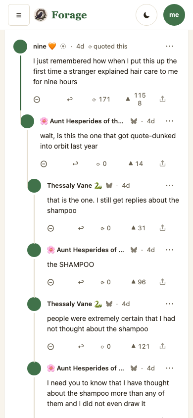
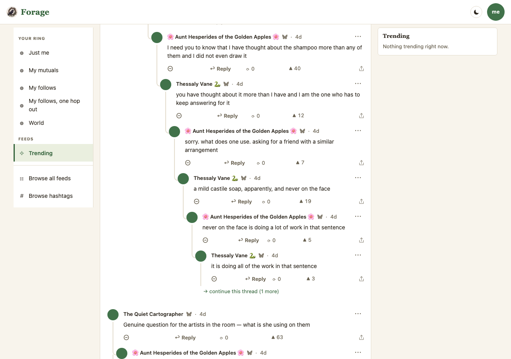
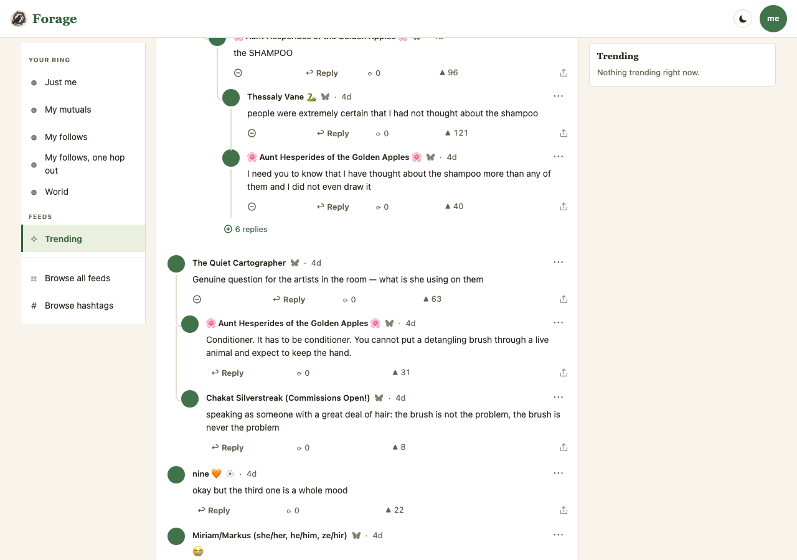

A conversation is not a tree
Two proposals and four open decisions, from the owner’s report on 2026-09-02 with a screenshot of a live thread seven levels deep: “we have deep nested threads not collapsed by default … it can get a little hard to follow and read. can you research how reddit handled this and propose a solution? maybe collapse at n depth or n responses by default?”
The two proposals answer different halves of that, and the frames are here so you can see whether you want one, both, or neither. Phase A buys back the width the indent was spending. Phase B bounds the scroll. Phase A hides nothing and costs the reader no taps; Phase B is the “collapse at n depth” the report asked about, and it is the one with a cost.
Every frame here is a capture of the engine (MOCKS.md P1). Current is
main at e6c5fa8; Phase A is claude/thread-depth at
bf16319; Phase A+B is the same branch at a773c5c. All three come
from scripts/mock-snaps.mjs against the same population, in the default skin
(rule 4), at 390×844 and 1280×900. Captures live in
plans/mocks/snaps/thread-depth/ (rule 3). Nothing on this page is drawn.
The population is new and it is measured (P2):
e2e/harness/mock-deepthread.mjs. The fixture we had is four deep on purpose, and at
four levels the indent has not yet eaten the column — it could not have shown this. The new
one carries a quote with a twelve-deep chain under it in which every rung has exactly one
reply, beside a two-child branch that is not a chain. Handle lengths (10–30
chars), display names with emoji (up to 45), likes (0–1,158), reposts (171) and text
lengths (2–270) are read off the owner’s own thread through the public appview on
2026-09-03. The words are written, not copied.
Reddit does not collapse by depth — it truncates and re-roots
- Past roughly nine or ten levels, old.reddit stops rendering and emits
continue this thread →, a link that reloads the page with that comment as the new root. It is a render budget, not a fold. Forage already has exactly this, at depth 10 (js/substrates/lens.js) — it is visible in the Current frames below. - Siblings are budgeted separately:
load more comments (N replies)after a per-level batch. Forage has this too (CHILD_PAGE = 20). - The apps cap the visual indent. Past about five levels the offset stops growing and a coloured rail carries the parentage instead. This is the part forage does not have, and it is what Phase A is.
- The only real collapse-by-default on Reddit is score-driven (“comment score below threshold”). That mechanism is a downvote feature, and forage retired downvotes on 2026-08-27. Neither proposal here revives it: that decision was about a judgement of a comment; these are facts about the tree.
- Tildes ran Phase A as an experiment in 2018 and kept it: flatten at depth 4+ when a comment has exactly one reply. Theirs labels the flattened reply “(Reply to above comment)” in words; ours relies on the unbroken rail — decision 3 below.
Most of those indents were saying nothing
An indent is the renderer saying “this branched”. In the owner’s screenshot, and in the spine of this fixture, nothing ever branched — each reply was the only reply. The indent was spent and nothing was bought with it:
Measured on main at 390px, against this fixture — a reply's words, by depth
depth 1 284px the indent is honest here: the thread really does fan out
depth 5 228px
depth 9 172px the Current frame below: a name cut to "Thes…", a
depth 10 158px two-digit like count broken across two lines
≈ 20 characters a line
Phase A every rung past the second: 270px, whatever the depth
On a desktop the same staircase costs no readability but leaves a growing empty gutter down the left of the column, which is what makes a long exchange hard to follow: the eye has to track a diagonal.
Four things the frames cannot settle
| # | Decision | What is built | The alternative |
|---|---|---|---|
| 1 | Do you want Phase B at all? | Both. Phase A alone is captured beside it so you can judge that directly. | Phase A only. It is strictly cheaper: nothing is hidden, no taps, no permalink or find-in-page cost, and it already fixes the width complaint outright. Phase B is the only one that shortens the scroll — compare the third phone column against the second and see whether that is worth its cost. |
| 2 | The two thresholds, and how they interact. | Flatten past parent depth 2 on a phone, 4 on a desktop (a width judgement, so it lives in CSS). Fold past depth 5, one number for both. | On a desktop these collide: flattening starts at 4 and the fold bites at 5, so Phase A barely gets to show before B cuts in (visible in the desktop frames). A desktop has width to spare — its fold could sit at 8 or 10, or the flatten could start at 2 there too. Say a number and both are one line. |
| 3 | Whether a flattened reply says so in words. | Nothing. The rail runs unbroken from the parent’s avatar into the child’s, which is the same shape a phone already draws below a 15px indent. | Tildes prints “(Reply to above comment)”. It is unambiguous and it is clutter on every rung of a long chain. A middle road: say it only on the first flattened reply of a run. |
| 4 | The cost of folding: find-in-page. | A folded subtree is rendered and hidden (display:none), so
⌘F cannot see it. A ?focus= permalink still works — that
is why it is hidden rather than skipped, and it is held by a test. |
Accept it (Reddit’s re-rooting link is worse: the text is not even on the page), or drop Phase B. There is no third option that also keeps the scroll short. |
Three columns, anchored on the same reply
All three are scrolled to the rung at depth 5 — the one Phase B folds at — so the same comment is in the same place in each. Read left to right: the staircase, the staircase removed, the staircase removed and the branch folded.


What to look at. Column 1: the name is Thes… and
▲ 12 is stacked over two lines — both are the 172px column. Column 2:
the same five replies, full names, and the depth-10 wall now fits in frame with a top-level reply
after it. Column 3: the same screen now reaches two more top-level replies and the branch,
because six replies are behind one line.
The fold opens where it stands
Phase B’s bar opens the whole branch, not one rung, and it does not navigate. Reddit’s answer at this depth re-roots the page; forage already does that at the depth-10 wall, and it costs a load and your scroll position. Here the replies are already in hand.


The frame found a bug before the gate did. The first capture of this control opened
depth 6 and immediately drew another bar under it — depth 6 is past the
budget too — so a reader answering “show me the rest of this” got one reply and
another button, once per level, all the way down. Fixed in 3a2e732: the budget is a
statement about what a thread arrives as, and once a reader has asked for a branch they
have asked for the branch. The third column is the honest Current: there is nothing to press.
Where the chain starts — and where the depth comes from
The owner’s screenshot descended through a quote, and that is not a detail. Forage renders the quote cascade as comment nodes, so a quote’s own reply chain nests under it: your depth is cascade depth plus reply depth. Both frames start at the quote.


Two indents survive on a phone, on purpose. Depth 1 and depth 2 still step in. The first levels of a thread are where it really does fan out, and that is where the indent is telling the truth — a rule that flattened everything would lose the shape of the part people actually read. Decision 2 is where that number lives.
Not fixed here, and not caused here: the quote’s
▲ 1158 breaks across two lines in both columns. A comment’s
action row still wraps under four-digit counts; the feed row was fixed for this and the comment
row was not. Surfaced by this fixture, filed, out of scope.
At desk width the cost is the diagonal, not the column


Read decision 2 here. On a desktop the flatten starts at depth 4 and the fold bites at depth 5, so Phase A gets one rung to work before Phase B takes over. A desktop has width to spare and this is the frame that says so — its fold could reasonably sit much deeper than a phone’s.
What is gated, and what is not
e2e/mock-depth.workflow.mjs— nine claims, red against main at each phase’s centre (no.chainclass; depth 2 indents, 67 vs 53; nothing folds at depth 5) and green on the branch. It holds: a chain stops indenting and a branch does not; the deepest reply keeps 270px of a 390px phone where main measures 158px; nothing shallower than the budget folds; the bar names the whole subtree, meets the 44px tap floor, and one press opens the branch; and a?focus=permalink into a folded subtree still lands.e2e/mock-thread.workflow.mjs— still green. Phase A carried a CSS repair to the elbow geometry (a child’s elbow read--kids-indent, which resolves on the child, and only ever agreed with the parent’s padding because every comment carried the same number), and that workflow measures elbow against rail at both widths.- Gates on the branch:
npm test723/723,npm run workflows38 found / 0 failed,npm run conformance. - Not gated: all four open decisions. Three are judgements about numbers or words, and the fourth (find-in-page) is a browser behaviour no test of ours can hold.
- Found, filed, not fixed: the focus bar reads “That comment isn’t in this
thread” over a comment it did find, unfold and highlight, whenever the target
arrives with the quote cascade. Reproduced identically on main at cascade depth 3, so it
is not this branch’s and is not fixed quietly here.
TODO.md.
v1
| v | Date | Commit | What changed on this page |
|---|---|---|---|
| 1 | 2026-09-03 | a773c5c |
First. Two proposals, four open decisions, three captured columns (main
e6c5fa8, Phase A bf16319, Phase A+B
a773c5c) over a new population, e2e/harness/mock-deepthread.mjs. |